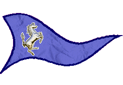
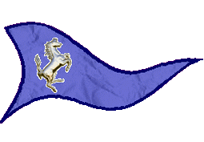

|

|
Das schwarze Brett
|
|
| Übersicht,
Anschläge und Stammtisch (RPG) |
|
Schöne neue Welt...!?
|
| Ilborath Thalárian (RIP) |
*So viel hatte er sich vorgenommen in dieser neuen Welt, so viel hatte er sich erhoggt von dieser neuen Welt! Seit er seine alte Heimat verlassen hatte und auf dem Schiff angeheuert hatte, welches ihn zu einem besseren Ort bringen sollte. Doch war er gestrandet, das Schiff war an den Klippen einer Insel zerschellt und er kam in einer Stadt namens Dornnenhain. Dennoch schien alles gut zu werden, fand er doch schnell Freunde. Doch nun? Schon seit Tagen schwirren dieser Gedanken in seinem Kopf!*
Was geschieht in dieser "wunderbaren neuen Welt"?
Machtstreben, Herrschsucht, Fehden, Zwist und Ärger allerorten. Wohin soll das führen? Wir alle sind hier gelandet, mehr oder weniger freiwillig, doch was machen wir aus der Chance eine neue Welt aufzubauen? Sind wir nicht eben gerade der Unterdrückung durch die Mintotauren entkommen? Warum wollen sich nun einige wieder unterdrücken lassen von nach Macht strebenden Herrschern, welche Türme, Mauern und Soldaten sprechen lassen, anstatt Vernunft?
Was ist dies für eine Welt auf der wir wandeln? Sollte es etwa nicht mehr möglich sein, in friedlicher Koexistenz miteinander zu leben?? Sollten wir alle verdammt dazu sein, uns gegenseitig beherrschen zu wollen und somit das Werk der Dämonen zu vollenden, die es damals nicht geschafft haben, die zivilisierten Völker dieser Scherbe gänzlich zu vernichten??
Ilborath Thalárian
Zur 10. Stunde am 8.Dunkelfrost im Jahre 414 |
30.01.04 23:32
 |
|
| Deran Del Armgo (RIP) |
Nun ob Ihr es wahrhaben wollt oder nicht
Krieg und Machtstreben waren schon immer das Zeichen der Zivilisation und es wird dahin führen wo es immer hinführt.
Die Starken herrschen unter dem Schleier einer von ihnen aufgelegten Gerechtigkeit.
Der Sieger schreibt schließlich die Geschichte und die Drow werden immer zu den Siegern gehören.
Deran Del Armgo
Zur 16. Stunde am 8.Dunkelfrost im Jahre 414 |
31.01.04 0:48
|
|
Runandriel Darkness
   |
Diese Fehden die in Krieg ausarten, ja, sie gehören zu dem Bild, das sich die Völker hier mit diesen Anschlägen in diesem Forum zeichnen. Im Stillen aber verbünden sich Mensch, Elf, Zwerg, Halbling, ja sogar Halborks zu starken Gemeinschaften, die gemeinsam in die Zukunft blicken und gemeinsam einen Weg in diese Zukunft suchen.
Wenn ich durch die Straßen unserer gerade gegründeten Siedlung gehe, dann sehe ich Lachende und Weinende, aber Freie, die hart an ihrem Traum arbeiten.
In unserer Gefangenschaft waren es Kollaborateure, Orks und Minotauren, die wir fürchteten, die wir haßten. Nun sind es die Plünderer und Kriegstreiber.
Wir beginnen gerade erst wieder zu erfahren, was Freiheit heißt. Es ist wie eine Geburt. Sie erfordert Blut, Schweiß und Tränen.
Damit nicht genug. Selbst die Freiheit hat einen Preis: Wir sind gezwungen selbst zu wählen, was wir sein wollen.
Nicht jeder wählt den Weg, der für die große Gemeinschaft förderlich wäre. Viele haben unterschiedliche Vorstellung des Weges, der gegangen werden soll.
Habt ihr erwartet, das nach dem Fall der Lager Friede, Freude, Eierkuchen sein wird?
Nein, mein blauäugiger Freund. Es war erst der Anfang. Jetzt gilt es die Welt (wieder) zu entdecken.
Auf dieser Reise werden viele niedergetrampelt, doch einige werden wieder aufstehen, vielleicht werden sie auch anderen helfen wieder aufzustehen.
Sie werden auf dieser Reise Gemeinschaften bilden und aus manchen dieser Gemeinschaften werden Nationen erwachsen, die das Land bestellen und ihre Mitglieder beschützen, andere Gemeinschaften werden zerbrechen.
Das ist der Lauf der Welt. Ihr lebt in einer Zeit großer Veränderungen. Solche Veränderungen werden durch Kriege gekennzeichnet. Es wird nicht immer so sein, aber noch lange genug. Dann wird es sich beruhigen bis die nächste Welle der Veränderung über uns hereinbricht. Das ist Gaias Lauf.
Runandriel Darkness
Zur 22. Stunde am 8.Dunkelfrost im Jahre 414 |
31.01.04 2:11
|
|
| Ilborath Thalárian (RIP) |
Nun werte Runandriel, ich weiss sehr wohl dass nicht alles Friede Freude Eierkuchen, wie ihr es nennt, sein kann. Es wird immer solche geben, die andere beherrschen wollen und solche die anderen Schaden zufügen wollen.
Was mich so sehr beunruhigt, ist die Geschwindigkeit mit der dies geschieht und die Anzahl der Zettel, die hier in einer atemberaubenden Geschwindigkeit angeschlagen werden, dass kaum noch zu überblicken ist, was in dieser Welt geschieht!
Und nun zu Euch Deran. Krieg und Machstreben sollein Zeichen von Zivilisation sein?? Es gab schon zahlreiche unzivilisierte Völker, welche durch Krieg und Machtstreben Zivilisationen zerstörten! Wenn es das ist, was Ihr wollt, dann befindet sich die Scherbe auf dem besten Wege, erst gar keine Zivilisation aufkommen lässt! Benehmen wir uns doch alle wie Orks, Trolle und Barbaren und schlachten uns gegenseitig ab. Was unterscheidet uns noch von Ihnen?
Ich jedenfalls sehe es genauso wie Runandriel. Es wird welche geben, welche sich gegen solche Machtspiele erwehren. Ich werde dazu gehören! Ich habe nichts dagegen, wenn sich Elfen, Menschen, Zwerge und andere in Nationen zusammentun, um gemeinsam große Ziele zu erreichen, doch macht es mich zornig, wenn dies scheinbar nur auf Kosten anderer möglich ist!
Ilborath Thalárian
Zur 8. Stunde am 10.Dunkelfrost im Jahre 414 |
31.01.04 10:18
|
|
Übersicht,
Anschläge und Stammtisch (RPG)
|
|
|
|